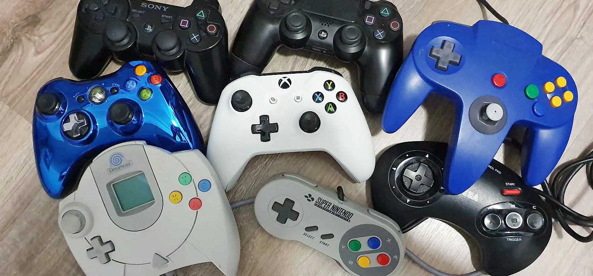

Un videojuego o juego de video es un software o juego electrónico en el que uno o más jugadores interactúan por medio de un controlador, con un dispositivo electrónico que muestra imágenes de video. Este dispositivo, conocido genéricamente como «plataforma», puede ser una computadora, una máquina de arcade, una consola de videojuegos o un dispositivo portátil, como por ejemplo un teléfono móvil, teléfono inteligente, tableta o una consola de videojuegos portátil. La industria de los videojuegos es un sector en constante crecimiento y se ha convertido en una forma de entretenimiento muy popular a nivel mundial
Los jugadores interactúan con los videojuegos a través de dispositivos
de entrada a los que se conoce como controladores o mandos.
Mediante estos dispositivos, los jugadores controlan los movimientos
y acciones de los personajes del juego y varía dependiendo de la
plataforma. Por ejemplo, un controlador podría únicamente consistir
de un botón y una palanca de mando o joystick, mientras otro podría
presentar una docena de botones y una o más palancas, lo que llamamos
mando. Los primeros juegos informáticos solían hacer uso de un
teclado para llevar a cabo la interacción, o bien requerían que
el usuario adquiriera un mando con un botón como mínimo.
Muchos juegos de computadora modernos permiten o exigen
que el usuario utilice un teclado y un ratón de forma simultánea.

Generalmente los videojuegos hacen uso de otros medios,
además de la imagen, de proveer los reflejos
e interacción al jugador.
El audio es casi universal, usándose dispositivos de reproducción
de sonido, tales como altavoces y auriculares.
Otro tipo de realimentación se hace a través de periféricos
hápticos que producen vibración o retroalimentación de fuerza.
Los orígenes del videojuego se remontan a la década de 1950, cuando poco después de la aparición de las primeras computadoras electrónicas tras el fin de la Segunda Guerra Mundial, se llevaron a cabo los primeros intentos por implementar programas de carácter lúdico. Así, fueron creados el Nimrod (1951) o el Oxo (1952), juegos electrónicos que aún no pueden ser denominados videojuegos, y el Tennis for Two (1958) o el Spacewar! (1962), auténticos pioneros del género. Todos ellos eran todavía prototipos, juegos muy simples y de carácter experimental que no llegaron a comercializarse, entre otras cosas, porque funcionaban en unas máquinas que solo estaban disponibles en universidades o en institutos de investigación.